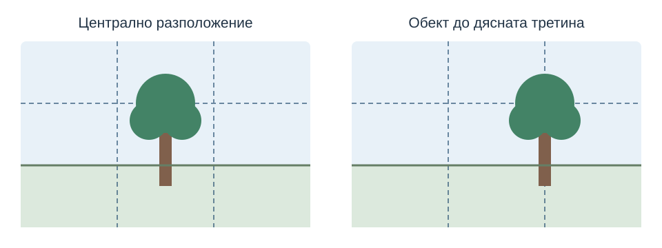

За какво е този урок?
Ще заснемете шест варианта на една тема и ще изберете кадър според посланието и мястото му в уеб сайт.
Четете обясненията, изпробвайте действията и запазвайте работата си. Отворените въпроси показват примерен отговор след предаване. При собствена тема са възможни различни обосновани решения.
Основен обект, баланс и свободно пространство
Какво показва снимката?
Поредицата свързва заснемане на снимки, светлина, подбор, подготовка за уеб, видеозаснемане, сценарий и монтаж. Използвайте достъпен предмет или клубна дейност. Пазете оригиналите и работните проекти в своя папка; в мисията предавайте точно посочения резултат. Ако започвате оттук, заснемете нужните кадри за избраната тема — не е необходим чужд готов проект.
Фотографската композиция е подредбата на видимите елементи в кадъра. Преди да снимате, отговорете: „Кое е най-важното тук?“. Това може да е човек, предмет, сграда или действие.
Основният обект е причината да направите снимката. Той трябва да се различава от останалото. Можете да го откроите чрез разположение, размер в кадъра, светлина, цвят или по-спокоен фон.
Пример: за страница на фотографски клуб снимка на ученик, който снима, показва дейност. Ако в кадъра преобладава празна стена, а човекът едва се забелязва, посланието може да остане неясно.
Баланс и свободно пространство
Балансът е усещане за съгласуваност между частите на изображението. Голям, ярък или силно контрастен елемент често привлича вниманието. Проверявайте дали второстепенен предмет не отвлича погледа от основния.
Не е задължително двете половини да са еднакви. Симетрична фасада може да изглежда убедително в центъра. Обект встрани може да остави пространство за средата или за посоката на движение.
Свободното пространство не е загубено място. То може да успокоява кадъра и да е полезно за заглавие в банер. Ако човек гледа или се движи в определена посока, сравнете вариант с повече място пред него.
Третини, гледна точка и граници
Правило на третините
Представете си две вертикални и две хоризонтални линии, които разделят кадъра на девет равни части. Можете да включите такава мрежа в настройките на камерата, ако тя я предлага.
Опитайте основният обект да е близо до пресечна точка, а хоризонтът — до една от хоризонталните линии. Това е ориентир за сравнение, а не задължение. Централната композиция също може да е подходяща, например при симетрия.

Гледна точка и граници на кадъра
Променете позицията си, преди да разчитате на обработка. Снимането от нивото на обекта, отгоре или от по-ниска точка може да даде различно усещане. Една крачка встрани често променя и фона.
- Проверете дали основният обект е достатъчно голям и ясно видим.
- Прегледайте четирите края: има ли случайно отрязани части?
- Сравнете хоризонтален и вертикален кадър според бъдещото използване.
- Използвайте мрежата, за да проверите хоризонта, когато той трябва да е изправен.
- Не увеличавайте цифрово без нужда: сравнете с приближаване или промяна на позицията.
Заснемете шест варианта
Практическа задача: шест варианта
Изберете достъпен предмет, растение или място, свързано с проекта ви. Използвайте телефон или фотоапарат. Ако включвате хора, съобразете заснемането и бъдещото публикуване с тяхното съгласие. Можете да изпълните цялата задача с предмет, растение или място без хора в кадър.
- Напишете с едно изречение какво трябва да показва снимката.
- Направете два кадъра: централен и с обект до третина.
- Направете още два от различна гледна точка.
- Направете хоризонтален и вертикален вариант, като запазите ясния основен обект.
- Разгледайте шестте снимки една до друга. Посочете две с най-ясно послание.
- За всяка избрана снимка обяснете разположението, баланса, фона и свободното пространство.
Резултат: шест кадъра и кратко обяснение на избраните два. Запазете ги за следващите упражнения по светлина, подбор и обработка.
Проверка и самопроверка
Покажете двата избрани кадъра на съученик, без първо да обяснявате темата. Нека посочи какво забелязва най-напред. Сравнете отговора с вашето намерение.
Прочетете още
Nikon — насоки за композиция (на английски). За връзката с дизайна прегледайте урок 8 — графичен модел.
Подгответе шест кадъра и изберете един за предаване
- Изберете предмет, растение или място. Напишете целта на снимката с едно изречение.
- Заснемете шест варианта: централен, до третина, две различни гледни точки, хоризонтален и вертикален. Дайте ясни имена 28-center, 28-thirds, 28-view-a, 28-view-b, 28-wide, 28-portrait, като запазите действителните разширения.
- Разгледайте цялата серия, а важния детайл — увеличен. Изберете два кадъра и сравнете основен обект, баланс, фон и свободно пространство.
- За мисията изберете един от двата за конкретно място в сайт — например банер с надпис вляво. Предайте го като
28-selected.jpg; сравнението на двата ще опишете в следващия въпрос. Запазете всичките шест оригинала за следващите уроци. - Отворете крайния файл повторно. Ако е HEIC или твърде голям, създайте JPEG копие по указанията по-долу; не променяйте само разширението. Не добавяйте силни корекции, които пречат да оценим композицията.
За малко копие за преглед: отворете снимката в GIMP с File → Open; Image → Scale Image със свързани ширина и височина; намалете по-дългата страна до 1600 px, ако е по-голяма. File → Export As → ново име с .jpg, качество около 85; отворете експорта и проверете детайлите. В Photopea: File → Open, Image → Image Size със запазени пропорции, File → Export As → JPG. Това е копие за предаване; оригиналът остава отделно. GIMP: мащабиране · JPEG експорт.
Самопроверка
Защо избрахте този кадър?
Пример: „28-thirds оставя свободно място вляво за заглавие и държи предмета ясно вдясно. В 28-center той е по-голям, но текстът би го закрил. Избирам първия за банер.“ Сравнете конкретни наблюдения от двата кадъра и връзката с предназначението. Друг избор е правилен, ако е обоснован.
Баланс или симетрия?
Да: по-голям предмет вдясно може да се съгласува с по-малък, но ярък елемент вляво. Важно е второстепенният елемент да не отвлича вниманието от посланието. Балансът е усещане за съгласуваност, а симетрията — сходство на двете страни.
Проверка на границите
Променете позицията, разстоянието или кадрирането преди повторно снимане, така че важната част да се побира и фонът да остава подходящ. Не е достатъчно механично да поставите предмета на третина; проверете и четирите края.
Какво да запомним?
- Първо определяме основния обект и посланието.
- Балансът не изисква симетрия.
- Третините са ориентир, а не задължение.
- Гледната точка променя и фона, и усещането.
- Избираме кадъра според мястото му в сайта.